| Herramientas en GNU/LINUX para estudiantes universitarios: La suitte ofimática OpenOffice.org 1.0.1 | ||
|---|---|---|
| Anterior | Siguiente | |
También podemos trabajar en bases de datos con OpenOffice.org. Podemos diseñar, crear y mantener una base de datos. El formato de base de datos a utilizar aquí es el de dBase, que es el estándar industrial.
En este capítulo se verá, también, cómo puedo combinar Calc y Writer, para que los datos que se han introducido en la base puedan usarse para combinarlos con fórmulas y con textos. Esto es muy interesante, ya que me permite, entre otras cosas, ahorrar un montón de tiempo cuando tengo que hacer mil cartas a mil clientes, o puedo hacer un formulario de base de datos por medio de las opciones de formulario, también aprovechar los datos para realizar gráficas, funciones... Lo que voy a explicar es cómo podemos aprovechar los datos para optimizar al máximo las tareas de ofinicina.
Es muy sencillo. Simplemente tengo que ir al menú herramientas, y desde ahí llevar el cursor hasta Fuentes de Bases de Datos.
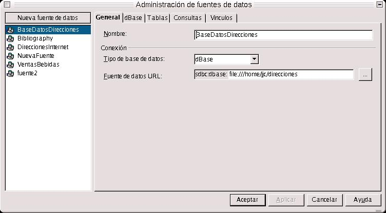
Nos aparecerá un cuadro de diálogo, y entonces para crear una nueva base de datos, pulso sobre Nueva Fuente, escribo el nombre de la fuente nueva, y posrteiromente selecciono como tipo de base de datos dBase. En el campo de más abajo, debo indicar la ruta del fichero, es decir dónde va a estar situado el fichero. Previamente, lo he tenido que crear desde la consola de comandos con mkdir.
Una vez que ya se ha creado, puedo empezar a trabajar con él. Por ejemplo, lo primero que se suele hacer es añadir una tabla. Vamos con ello
Vamos a añadir una tabla, para ello me voy a la ficha Tablas y me voy al botón Nuevo Diseño de Tabla
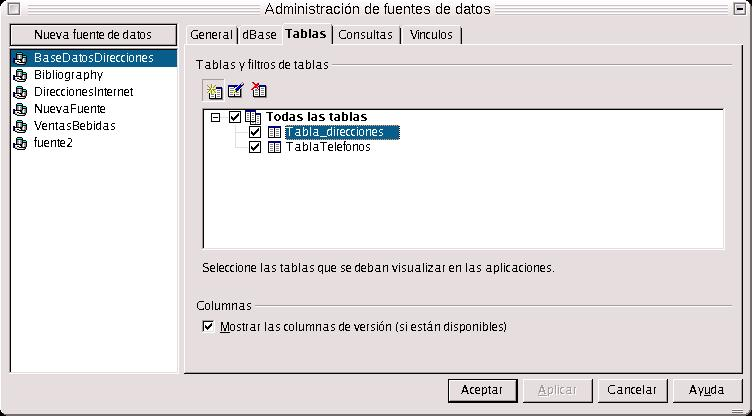
Nos aparece en pantalla el entorno de trabajo de Creación de Nueva Tabla. En dicho entorno, en la parte inferior se sitúan las propiedades de los campos, y en la zona de trabajo, vemos tres columnas: la primera para el nombre del campo, la siguiente para el tipo y por último, la descripción.
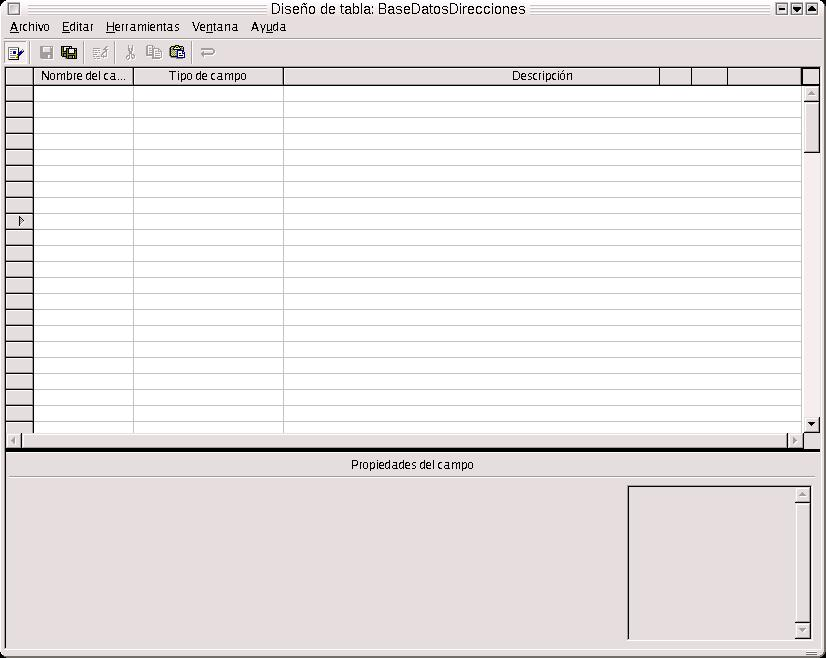
Dentro de la columna Nombre del campo, escribiremos su nombre. En el tipo, caben distinguir cuatro tipos fundamentales: Booleano (si/no), Decimal (numérico), Texto y Fecha. La columna descripción simplemente sirve para describir el campo. Es un entorno muy similar al de Access, sólo que es mucho más sencillo.
Una vez que ya está definida la tabla, tenemos que guardarla. Para ello pulsamos sobre el botón Guardar de la barra de funciones, y nos aparece una ventana de diálogo solicitándonos el nombre con el que queremos guardar dicha tabla.
Ahora es cuando podemos introducir nuevos datos en la base. Desde la barra de herramientas, selecciono Fuentes de Datos. En la parte superior izquierda, aparecen todas las fuentes de datos que están disponibles para trabajar con ellas, incluso la que se acaba de crear.
Selecciono la nueva que he creado, con un doble clic, y aparecen tres ramas, Vínculos, Consultas y Tablas. Muevo hasta Tablas, y selecciono nuevamente, hasta que aparece la tabla que acabo de crear. Entonces la selecciono nuevamente con doble clic.
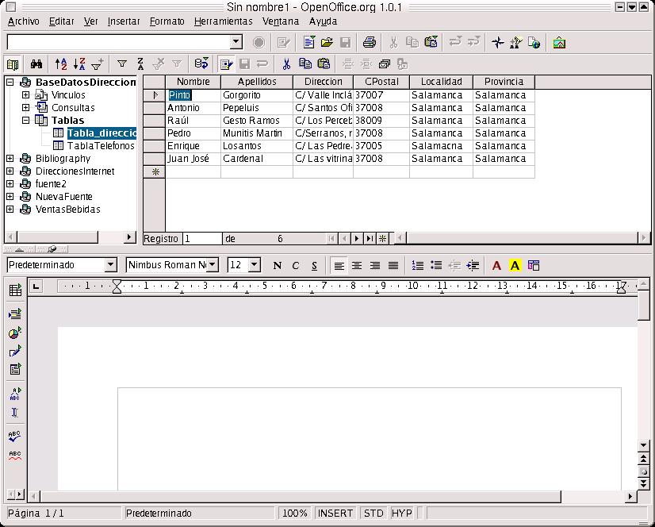
Aparece la base de datos vacía (porque se ha introducido ningún registro), en forma de tabla. Cuando quiera puedo empezar a meter datos, seleccionando cualquiera de las celdas que se vean.
Como ejercicio, introducir datos en las celdas, para familiarizarse con el entorno de la base de datos de OpenOffice.
Existen variadas aplicaciones de la base de datos para la oficina. Quizás, una de las más importantes es la combinación de correspondencia.
Imaginemos la siguiente situación: tenemos que escribir mil cartas a mil clientes de nuestra empresa. Esto, aparte de ser un embrollo para cualquiera, puede suponer una grave pérdida de tiempo, si no fuera porque podemos combinar la correspondencia.
Combinar correspondencia me permite ahorrar el 99% del tiempo que hubiera perdido escribiendo mil direcciones de correo. ¡Ah!, supongamos que tenemos una base de datos con los mil clientes.
La base de datos contiene: tratamiento (D. o Dña.), el nombre, los apellidos, la dirección, código postal, localidad y provincia.
Primero hay que escribir la carta que va a llegar a todo el mundo. Una vez escrita dicha carta, se añaden los campos en aquellas zonas de la carta donde hay que personalizarla.
Para añadir los campos me voy al botón Formulario de la Barra de Herramientas, situado en la parte izquierda del entorno de trabajo. Lo mantengo pulsado hasta que sale un cuadro de botones. Dentro de dicho cuadro, selecciono Añadir Campo. Aparece una ventana pequeña con los campos de la base de datos. Selecciono el que quiero insertar, y manteniendo pulsado el botón izquierdo del ratón, lo arrastro hasta la zona de la carta donde deseo insertarlo.
Una vez que ya está personalizada la carta, nos vamos a la Barra de Funciones, y pulsamos en el botón Carta en Serie.
En el pequeño cuadro de diálogo que aparece, tenemos una dos series de opciones agrupadas. En la primera serie, de la izquierda del cuadro, llamada Registros, debemos indicar nuestras preferencias de impresión de los registros, y en la serie de la derecha, llamada Destino, si queremos que se imprima directamente, enviarlas por correo electrónico o guardarlas todas en un archivo.
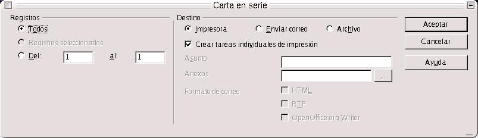
Como primer ejercicio, crear una base de datos nueva, con una tabla que contenga los siguientes campos: Nombre, apellidos, dirección, localidad y provincia. Después crear una carta que vaya dirigida a dichos clientes, en la que estén incluidos los campos antes citados. Una vez hecho esto, guardarlas en un archivo, con el nombre que se le desee dar, y preferentemente en formato .doc, para que se puedan leer en el procesador Word.
Como segundo, crear dentro de dicha base de datos, una tabla nueva, llamada teléfonos, y a cada cliente de los creados antes le asigno un número de teléfono. Posteriormente, guardo la tabla, y en la misma carta añando en una zona cualquiera, el campo teléfono.
Como tercer ejercicio, crear otra tabla, con dos campos: correo electrónico y página web personal. Guardar la tabla, pero sin añadir ningún campo de más a la carta.
Una segunda aplicación que es muy interesante, es insertar cualquier tabla en una hoja de textos. Ya habíamos dicho que para crear una tabla había que hacerlo insertándola e indicándole el número de columnas y de filas. Si se recuerda bien, comenté en el capítulo 1 que la inserción se hacía bien desde la barra de herramientas o desde la de menús en Insertar --> Tabla.
Se puede insertar directamente, arrastrándola con el botón izquierdo del ratón hasta el lugar de la zona de trabajo donque queremos que esté. En este caso lo que estamos haciendo es insertar una tabla desde la base de datos.
Una vez que se termine de arrastrar, nos aparece un cuadro de diálogo, en el que tenemos que indicar si deseamos insertar los datos como una tabla, unos campos o en formato de texto. Además hay que indicar las columnas de la tabla que deseemos pasar.
Con esto, podemos elaborar un gráfico, con el procedimiento que se comentó en el capítulo uno. Con la única salvedad de que hemos de seleccionar todas las celdas de la tabla.
Probar a insertar como texto, tabla y campos los datos de una tabla de las de la base de datos, y realizar el gráfico correspondiente .
Aparte de lo anteriormente comentado y de la combinación de correspondencia, yo puedo pasar una serie de datos al texto sobre el que estoy escribiendo.Puedo hacerlo bien seleccionando con el mouse dicho dato y arrastrándolo hasta la zona de trabajo.
Otra aplicación interesante es que yo puedo controlar la base de datos desde una aplicación de texto. Imaginemos que estamos realizando un informe sobre ventas, beneficios... e interesa acceder a la base de datos. Puedo manipular dicha base desde el editor de textos Write.
¿Cómo?. Simplemente con el botón de Control de Tablas, situado dentro del conjunto de botones Formulario. Pulso sobre dicho botón, e inmediatamente me aparece un cuadro de diálogo con los campos a insertar. Inserto los campos y creo la tabla. Pues bien, desde esa misma tabla controlo la de la base de datos. Además puedo controlar varias tablas de distintas bases de datos con Writer. En una misma página de texto, puedo tener las tablas que yo quiera de distintas bases de datos.
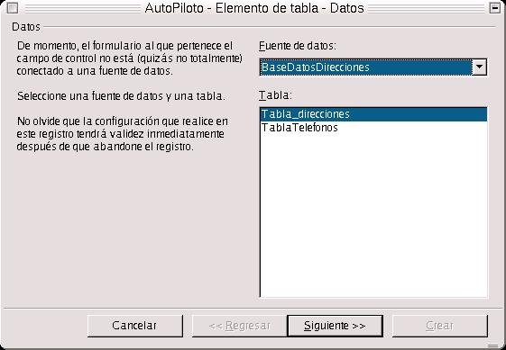
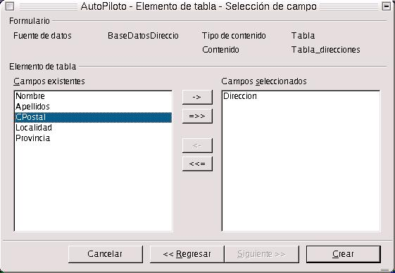
Ejercicio: probar a insertar las tres tablas creadas anteriormente (insertar con el Controlador de Tablas), en la zona de trabajo del procesador. Hay que tener en cuenta que hay que crear, por lo menos dos formularios distintos, para acceder a las tablas. Una vez insertadas, trabajar con ellas introduciendo datos nuevos, modificando, y guardándolos en la base de datos.
Estamos de acuerdo en una cosa, ya tengo una base de datos. Pero ahora me interesa crear un formulario que me haga más sencilla y eficiente la gestión de la base de datos. Para la gestión de la base de datos, es más conveniente hacer el formulario en la zona de trabajo del Writer. El formulario que podemos hacer podría ser como el siguiente:
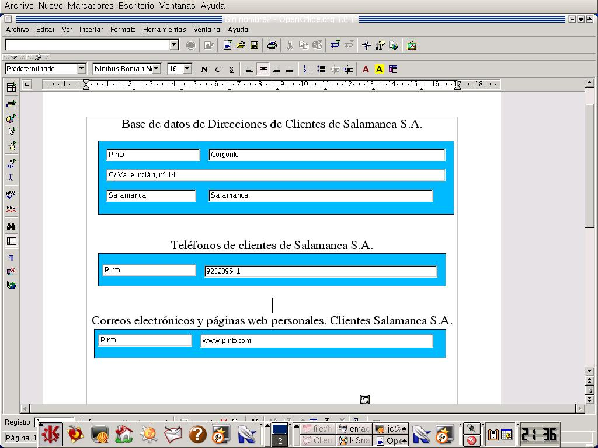
Puedo hacer tres formularios o más en uno. Cada formulario es independiente de los otros. Es decir, que un formulario puede estar situado en un registro determinado y los demás en otros dos distintos.
Lo primero que hay que saber es que cada formulario va enlazado a una única tabla de la base de datos, nunca se puede enlazar a más de una tabla. En este caso, las tablas que han sido enlazadas son las del ejemplo anterior.
Para empezar, hay un botón en la barra de herramientas, que es Formulario. Al pulsar sobre dicho botón y mantenerlo durante unos pocos segundos, se presenta un cuadro de botones. Dentro de ese mismo cuadro, buscamos el navegador de formulario. Se nos presenta una pequeña ventana, con un sólo formulario, que es el que por defecto usa OpenOffice, llamado Standard. Para añadir uno nuevo, pulsamos sobre Standard con el botón derecho del mouse, y le decimos Nuevo--> Formulario.
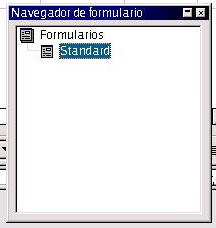
Pero a dicho nuevo formulario hay que indicarle unas propiedades. Dentro de la misma ventana seleccionamos el formulario con el botón derecho del mouse, y nos vamos a Propiedades. En la pestaña de Datos, indicamos como fuente de datos el nombre de la base de datos con la que estemos trabajando, y como contenido, el nombre de la tabla. Una vez hecho esto, ya podemos empezar a trabajar con el formulario.
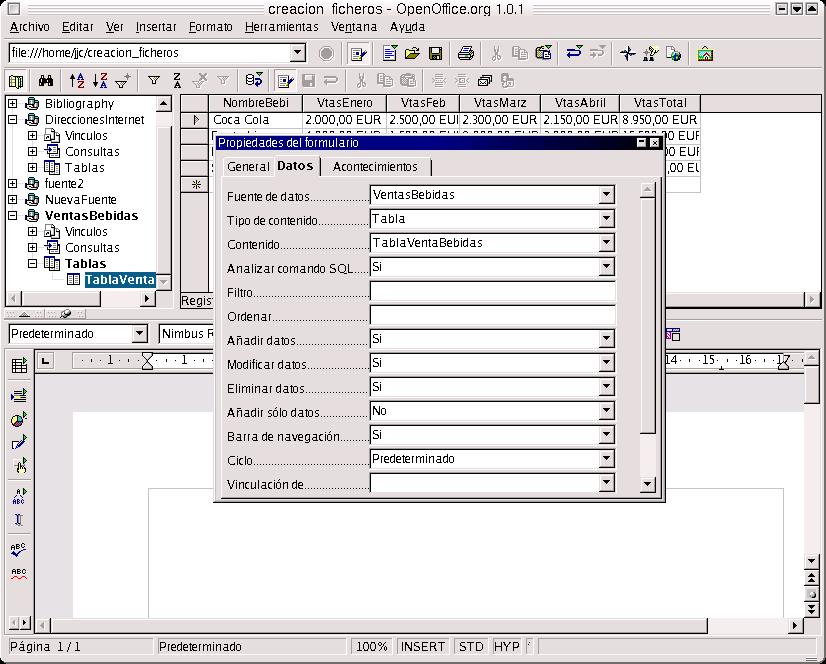
Empezamos: nos vamos al botón Formulario de la barra de herramientas, y dentro del cuadro de botones seleccionamos Campo de Texto. El cursor cambia de forma, y es cuando podemos insertar dicho campo. Llevamos el cursor a la posición de la zona de trabajo, lo arrastramos hasta que el campo de texto alcance el tamaño deseado, y listos. Ahora tenemos que dar unas propiedades al campo de texto.
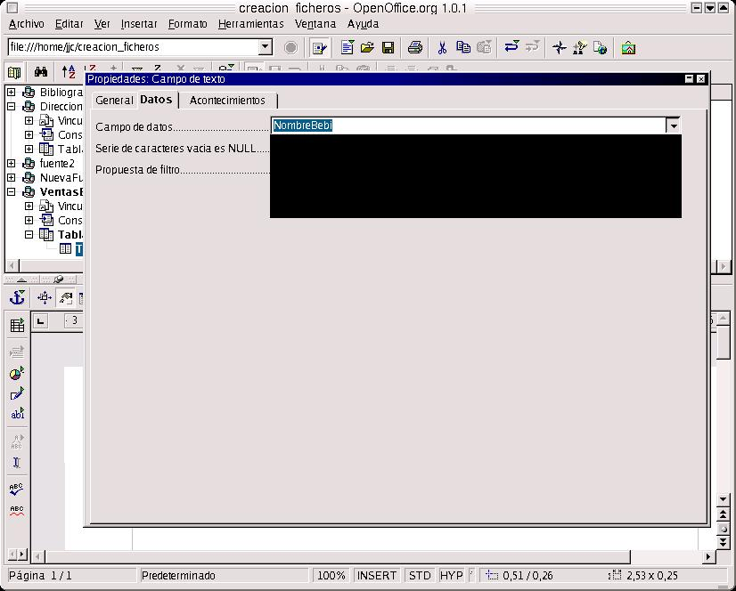
¿Cómo?. Seleccionamos dicho cuadro con el botón derecho y nos sale un cuadro emergente, y dentro de él escogemos Campo de Control. En el cuadro resultante, vamos a la ficha Datos, y seleccionamos dentro de Casmpo de Datos el nombre del campo al cual se va a enlazar. Para ello hay que asegurarse de que el cuadro de texto está incluido dentro de un formulario, y a su vez el formulario está enlazado con una tabla de la base de datos. Si el formulario no está enlazado, el campo simplemente aparecerá como vacío al no tener datos que importar.
Para crear un nuevo formulario, simplemente nos vamos al navegador que antes hemos visto, pulsamos en Formularios con el botón derecho y en el cuadro flotante resultante pulsamos Nuevo-->Formulario, y le ponemos el nombre al mismo. Después lo seleccionamos con botón derecho del mouse, y en el cuadro resultante decimos Propiedades. Dentro de las mismas nos trasladamos a la ficha Datos, y le indicamos el nombre de la Base de Datos de Origen, le indicamos si deseamos enlazarlo a una tabla o consulta, y después indicamos el nombre de la tabla o consulta.
Ejercicio:
Con las tablas que han sido creadas anteriormente, hacer tres formularios, cada formulario enlazado a una tabla, y con dos campos por formulario. Desde el botón formulario, añadir una etiqueta para cada campo.
Las aplicaciones para Calc son las mismas, puedo realizar gráficas, insertar una tabla, analizar los datos, manipularlos como se comentó antes con el Controlador de Tablas y realizar formularios, todo con el mismo procedimiento que con Writer.
La pregunta que nos planteamos aquí es si puedo realizar una consulta en una base de datos con OpenOffice, la respuesta es sí.
Utilicemos como ejemplos las tres bases creadas anteriormente.
Dentro del cuadro de diálogo Fuentes de Datos, nos vamos a la ficha Consulta. Dentro de ella añadimos una nueva, pulsando en Nueva Consulta.
Al hacer clic, aparece el diseñador de consultas de OpenOffice.org, que lo primero que hace es solicitar las tablas con las que trabajar.
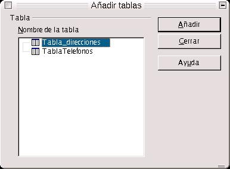
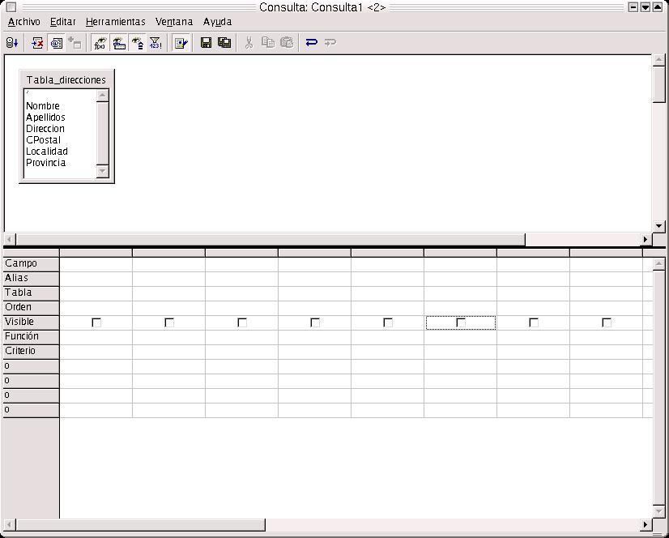
Cada tabla añadida, aparece en el diseñador de consultas. Puedo generar relaciones entre tablas arrastrando el campo que se desee relacionar de una tabla a otra. Es cuando aparece una línea que nos indica que las tablas están relacionadas.
En la zona inferior del diseñador, podemos escribir o seleccionar los campos que deseemos que aparezcan en la consulta. Debemos, bien escribir, o seleccionar los campos en el renglón Campos. Si estamos escibiendo los nombres, debemos también escribir o seleccionar la tabla a la que pertenece el campo en el renglón Tabla.
En el renglón Alias, indicamos si deseamos que el campo seleccionado aparezca con otro nombre en la consulta.
El renglón Orden, nos indica cuáles son los campos mediante los que se ordenará la consulta. Se debe indicar si es ascendente o descendente.
Visible indica al diseñador si el campo se va a ver en el resultado final de la consulta. Si ese campo aparece o se muestra repetidamente en la consulta, entonces nos puede interesar que no aparezca.
Función nos indica, si el campo seleccionado va a realizar algún proceso especial, tal como la sumatoria, el conteo de los datos, el valor máximo, etc..
En Criterio, puedo escribir el criterio por el cual se filtrarán los datos, y luego le siguen más renglones, marcados con O, que indican más interios con los cuales filtrar los datos.
Otra forma de crear una consulta es escribiéndola directamente en la ventana de comando SQL. Para acceder a ella hay que hacer clic en el botón Introducir Nuevo Comando SQL.
En este caso, aparece la ventana de comandos SQL. A través de ella podemos generar la consulta. Pero este es un tema en el que no nos vamos a extender, ya que se necesita tener conocimientos de dicho lenguaje.
¿Qué podemos hacer con las consultas?
La función de la consulta es la de extraer los datos de la fuente de datos. Fundamentalmente, una consulta trabaja con Calc, usando lo que llamamos el Piloto de Datos.
Para trabajar con el Piloto de Datos, nos vamos a Datos, desde Calc, y seleccionamos la base de datos y la consulta con la que queramos trabajar. Una vez hecho esto nos aparece una ventana, en la cual hemos de indicar el diseño que deseamos para los datos que se pasarán a Calc. Arrastraremos los campos de la consulta al área de fila o al de columna, según el caso, para pasarlos a Calc. Podemos hacer clic en el botón de opciones, y en este caso aparecerán las relativas al resultado a mostrar. Podemos agregar totales a columnas y cilas, también indicar si se desea la consulta en una nueva hoja o en la actual. Podemos indicar la columna-fila a partir de la cual iniciar la importación de los datos, e importar varias veces los datos para observar los resultados de las diferentes combinaciones.
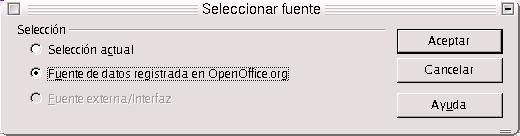
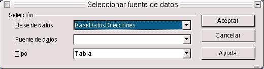
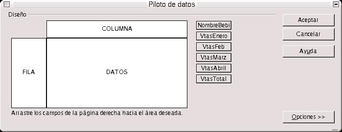
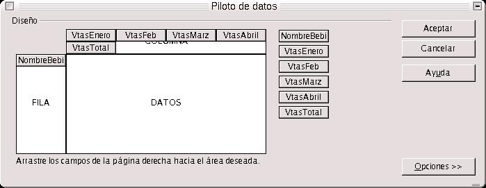
Sobre las tres tablas construidas anteriormente, diseñar una consulta, con la tabla Tabla_direcciones, en la que aparezcan los siguientes campos: Nombre, dirección y localidad, con el criterio de que la localidad sea distinta de Salamanca. Además hemos de pasar los resultados a una hoja de cálculo por medio del Piloto de Datos. Colocar los campos en filas o columnas.